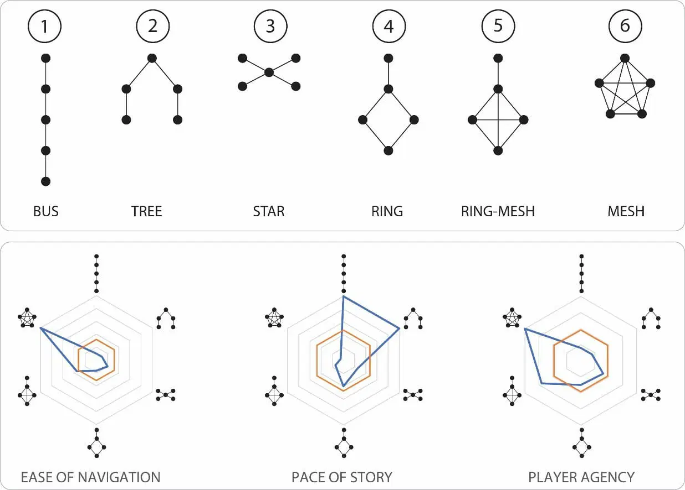

Research
This page documents our research and decision-making while creating the AI-Autostart and No-GUI Game projects.
Related Projects
Intel Wi-Fi 7 Presence Detection [1]
Our initial starting point for this project was Intel's Wi-Fi 7 sensing technology that detects when a person sits down in front of a computer using the wireless signal itself, triggering the machine to wake and begin interaction without any explicit user input.
We were inspired by how the interaction was initiated without requiring the user to press a button or look at a screen directly, and asked ourselves how this could be used to make systems more accessible.
Technologies
placeholder
Field Research
placeholder
References
- Intel Technology, "Intel Technology | Wi-Fi Proximity Sensing," Youtube.com, Nov. 15, 2022. https://www.youtube.com/watch?v=3WFx-8agAq4 (accessed Mar. 21, 2026).
Related Projects
Zork [1]
After we began working on our No-GUI game for the blind, it wasn't long before Zork came up. Being one of the earliest and most influential interactive fiction games, played entirely through typed text commands with no graphics, it demonstrates that a game does not need fancy graphics to be compelling.
Building on-top of what this example achieved, we removed the need for typing and reading and replaced it with gesture and audio only interactions (our settings do offer key bindings instead of hand gestures as well).
Choose Your Own Adventure Books
Another concept we kept referring to whilst coming up with the game structure were these books from our childhood. These books place the reader as the protagonist of a story, offering binary choices at the end of each passage and directing them to different pages based on their decision.
Our No-GUI Game takes this exact structure: a tree of scenes with two choices at each node that lead you to different outcomes.
"Game Science: Story Structure as Network Graphs" [2]
This article was part of our research for designing the blueprints of the game. It talks about adventure games as graphs where each node represents an event which makes it very relevant to our game.
The key insight we took from it was about graph shape. A simple branching story follows the structure of a binary tree but this grows exponentially — a game with just 5 decision points already has 32 possible leaf nodes, most of which the player will never see.
Madsen's article introduced us to the idea that good story graphs are deliberately narrow: paths branch out only to later rejoin. This creates the illusion of meaningful choice without the exponential content of a true binary tree. Based on this, we designed our blueprint generator to explicitly instruct the LLM not to produce a binary tree. Instead the blueprint prompt asks for a graph where branches converge, with a small number of terminal win and lose nodes that multiple paths lead toward.

VLC Player & MP4 Files
While coming up with a way to store our games we took inspiration from how VLC and MP4 files work. VLC does not own or manage the video file; it simply opens it and plays it. The MP4 file is self-contained: it includes the video, audio tracks, and metadata all in one portable package. Any compatible player can open it.
We wanted the same relationship between our game player and our game files. A .noui file is self-contained — it includes the graph structure, all audio, and save state — and any compatible runner can open and play it. The editor creates it, the runner plays it, and neither owns the other.
Technologies
PySide6 (Qt for Python) [3]
The GUI framework used for both the game editor and the player launcher. Before settling on PySide6, we evaluated two alternatives. tkinter was the first candidate but we moved on quickly as its widget set is limited and its layout system made building the zoomable and scrollable game creation page difficult [4]. Kivy was our second option as it works better with custom graphics and is more flexible than tkinter [5], but in the end we chose PySide6 because Qt's QGraphicsScene and QGraphicsView provided exactly the zoomable, scrollable canvas needed for the node editor. Qt's QThread also enables responsive interfaces during long-running operations like LLM generation and TTS audio synthesis.
Text-to-Speech: Kokoro TTS [6]
The TTS engine went through several iterations before settling on Kokoro. ParlerTTS was the initial choice — it worked well but voice consistency was poor and generation speed was slow [7]. Bark (Suno AI) produced natural-sounding speech but suffered from the same problems. OpenVINO VibeVoice was also considered as an Intel-optimised option but its main use case is generating one long audio file, while we need many short ones [8].
We landed on Kokoro TTS (hexgrad/Kokoro-82M). It produces consistent and natural-sounding British English speech across 8 distinct voices (4 male, 4 female), runs fully offline, and has a high generation speed. Audio is synthesised once at save time and stored in the .noui archive, so the player never performs TTS at runtime.
MediaPipe [9]
The gesture recogniser uses MediaPipe's hand tracking solution to detect landmarks on a hand from webcam frames, which are then classified into gestures by a custom classifier. It has eight built-in gestures: None, Open Palm, Closed Fist, Pointing Up, Pointing Down, Thumb Up, Thumb Down, ILoveYou, and Victory.
OpenCV
Part of the MediaPipe pipeline. Used for webcam frame capture and preprocessing before passing frames to MediaPipe.
OpenVINO GenAI [10]
For the game generation engine's AI helper we use the OpenVINO local LLM (phi-4, quantised to int4). It allows us to run the local LLM more efficiently on GPU or CPU and produces structured output based on a Pydantic-derived JSON schema.
Pydantic [11]
Used for graph serialisation and validation. SerialGraph and SerialNode are Pydantic BaseModel subclasses, giving automatic JSON serialisation. This ensures any .noui file loaded from disk is well-formed and validated before the game attempts to play it.
References
- D. Lebling and M. Blank, "Infocom Games - Zork I," Infocom-if.org, 1980. http://www.infocom-if.org/games/zork1/zork1.html (accessed Mar. 21, 2026).
- C. T. Madsen, "Game Science: Story structure as network graphs," Geek Native, Apr. 07, 2019. https://www.geeknative.com/65131/game-science-story-structure-as-network-graphs/ (accessed Mar. 21, 2026).
- "PySide6.QtGui - Qt for Python," Doc.qt.io, 2026. https://doc.qt.io/qtforpython-6/PySide6/QtGui/ (accessed Mar. 21, 2026).
- "tkinter — Python interface to Tcl/Tk," Python 3.12.13 Documentation, 2025. https://docs.python.org/3.12/library/tkinter.html (accessed Mar. 21, 2026).
- "Welcome to Kivy — Kivy 2.3.1 documentation," Kivy.org, 2024. https://kivy.org/doc/stable/ (accessed Mar. 21, 2026).
- "hexgrad/Kokoro-82M · Hugging Face," Huggingface.co. https://huggingface.co/hexgrad/Kokoro-82M (accessed Mar. 21, 2026).
- Y. Lacombe, V. Srivastav, and S. Gandhi, "Parler-TTS," GitHub, 2024. https://github.com/huggingface/parler-tts (accessed Mar. 21, 2026).
- "VibeVoice," Github.io, 2025. https://microsoft.github.io/VibeVoice/ (accessed Mar. 21, 2026).
- Google AI Edge, "Gesture recognition task guide," Google AI for Developers, 2025. https://ai.google.dev/edge/mediapipe/solutions/vision/gesture_recognizer (accessed Mar. 21, 2026).
- "OpenVINO 2026.0 — OpenVINO™ documentation," Openvino.ai, 2026. https://docs.openvino.ai/2026/index.html (accessed Mar. 21, 2026).
- "Welcome to Pydantic - Pydantic Validation," Pydantic.dev. https://docs.pydantic.dev/latest/ (accessed Mar. 21, 2026).